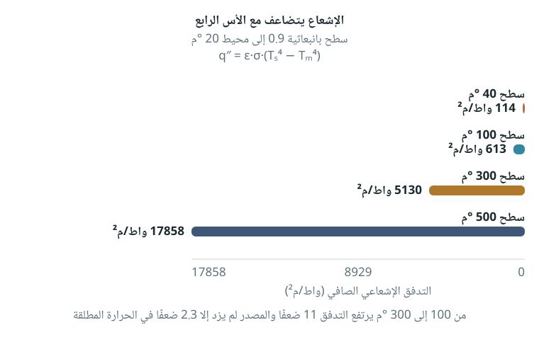

قانون ستيفان–بولتزمان
قانون ستيفان–بولتزمان يعطي الطاقة الإشعاعية الصافية: q″ = ε·σ·(Tₛ⁴ − Tₘ⁴) بثابت σ = 5.670×10⁻⁸ واط/(م²·كلفن⁴). الأس الرابع يجعل الإشعاع لا يهمل عند الحرارة العالية ولا يُحسب خطّيًّا مع الحرارة.
كل جسم يشعّ طيفًا يعتمد على حرارته المطلقة، والقوة الرابعة في القانون تأتي من ناتج توزيع الخطة (بلانك) ومعدل الفوتونات. سطح بانبعاثية 0.9 عند 100 °م يواجه محيطًا 20 °م يشعّ صافيًا 613 واط/م²؛ وعند 300 °م يصبح 5,130 واط/م². والمعادلة تُعين أثرًا عمليًّا: مبادل غير معزول بلا غلاف يشعّ حرارة، وسطح داكن في الشمس أسخن من سطح لامع بالشروط نفسها، والفرق بين قدرة لون الطلاء على خفض حرارة سطح في الشمس قائم على الانبعاثية والامتصاصية لا على الموصلية.
كيف تعمل الظاهرة؟
الشحنات المتسارعة داخل المادة تُشعّ موجات كهرمغنطيسية، وشدّتها تتحدد بعدد الحالات المهيّأة وكثافة الطاقة عند كل طول موجة. ولذلك يرتفع الإشعاع بسرعة مع الحرارة: مضاعفة الحرارة المطلقة تُضاعف الطاقة 16 ضعفًا. وينقص الإشعاع بانبعاثية أقل من 1، والانبعاثية منخفضة عند المعادن المصقولة لأن الإلكترونات الحرة تعكس الطاقة بدل أن تُشعّها، وترتفع عند العوازل والأسطح المؤكسدة والطلاءات الداكنة.
العلاقة بالأرقام
σ = 5.670374419×10⁻⁸ واط/(م²·كلفن⁴). سطح ε = 0.9 عند 100 °م (373.15 كلفن) إلى محيط 20 °م: q″ = 0.9×5.670×10⁻⁸×(373.15⁴ − 293.15⁴) = 613 واط/م². وعند 300 °م: 5,130 واط/م². ويُستخرج معامل إشعاعي خطّي h_r = q″/ΔT، فيكون عند 100 °م 613/80 = 7.7 واط/(م²·كلفن) — مقارب لحمل طبيعي في هواء ساكن، ولهذا يُهمل الإشعاع في الغليان ويُحسب وجوبًا في الأسطح الخارجية والزجاج.
مفاهيم متقاربة
القانون ليس خطّيًّا كقانون نيوتن: جمع الإشعاع في معامل h يُجيز الخطأ عند تغيّر الحرارة. والانبعاثية ε ليست الامتصاصية α في كل الأحوال: عند تساوي الطيف للحرارة يتحقق كيرشوف ε = α، ولذلك سطح أبيض يعكس الضوء المرئي ولا يبرّد بالضرورة في الشمس، لأن كثيرًا من الطاقة يأتي في تحت الأحمر. وليس الإشعاع توصيلًا: يعبر الفراغ بلا وسط، ولا يحتاج تلامسًا.
حدود التطبيق
الصيغة الصافية صحيحة بين سطحين أحدهما يحيط بالآخر (سطح في تجويف كبير). بين سطحين متقابلين محدودين تُضاف عامل تشكيل F وعاكسية، ويصبح q″ = ε_eff·σ·(T₁⁴ − T₂⁴) بمعامل صافٍ أقل من 1. ولا تصلح للمواد الشفافة (الزجاج، الغازات) بلا حساب امتصاص طبقي، وللغازات ثنائية الذرة إشعاع ضعيف في درجات الحرارة المنخفضة بينما يكون بخار الماء وثاني أكسيد الكربون مهمّين في غازات الاحتراق.

| الكمية | القيمة | المصدر |
|---|---|---|
| ثابت ستيفان–بولتزمان | 5.670×10⁻⁸ واط/(م²·كلفن⁴) | [1] |
| التدفق الإشعاعي الصافي لسطح 100 °م بانبعاثية 0.9 إلى محيط 20 °م | 613 واط/م² | [1] |
| التدفق الإشعاعي الصافي لسطح 300 °م في الشروط نفسها | 5,130 واط/م² | [1] |
| انبعاثية الفولاذ المصقول مقابل المؤكسد | 0.07 مقابل 0.80 بلا وحدة | [2] |
المصادر
- 1 Stefan–Boltzmann law — Wikipedia. en.wikipedia.org/wiki/Stefan%E2%80%93Boltzmann_law · اطُّلع عليه 2026-11-19
- 2 Emissivity Coefficients of Common Materials — The Engineering ToolBox. www.engineeringtoolbox.com/emissivity-coefficients-d_447.html · اطُّلع عليه 2026-11-19
- 3 Radiation Heat Transfer — The Engineering ToolBox. www.engineeringtoolbox.com/radiation-heat-transfer-d_431.html · اطُّلع عليه 2026-11-19
استشهد بهذا المصطلح
الصيغتان مبنيتان من بيانات الصفحة نفسها: العنوان والتاريخ ورابط النسخة المنشورة.
قانون ستيفان–بولتزمان. (2026). ديوان المعرفة — انفراد. https://infiradev.com/diwan/terms/stefan-boltzmann.html
@misc{stefan-boltzmann2026,
title = {قانون ستيفان–بولتزمان},
howpublished = {{ديوان المعرفة — انفراد} — مرجع علمي عربي},
year = {2026},
url = {https://infiradev.com/diwan/terms/stefan-boltzmann.html},
urldate = {2026-11-19},
note = {مراجعة علمية: عبدالله الهويدي — مراجعة في تطبيق انفراد}
}
راجعه: عبدالله الهويدي — مراجعة في تطبيق انفراد · 2026-11-19 · آخر تحديث 2026-11-19